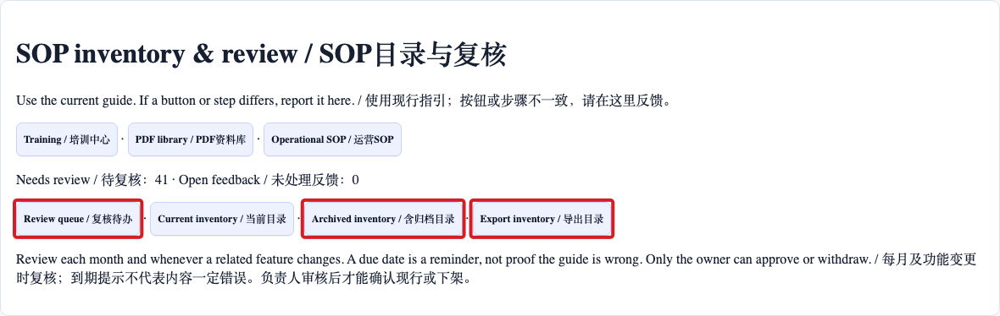
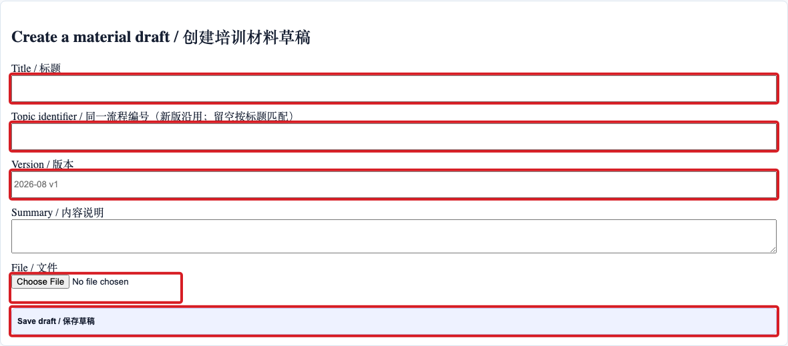
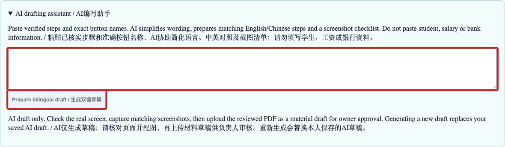
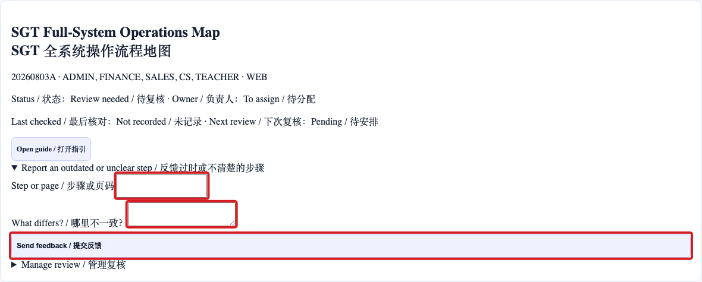
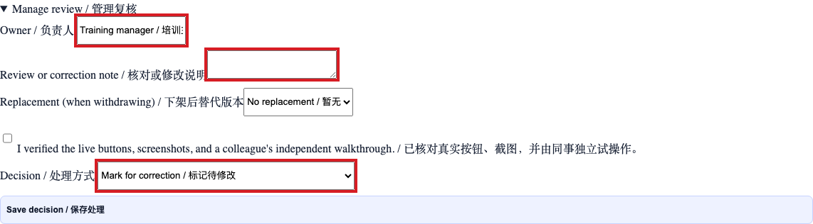

Create, update and review SOPs
管理者、SOP 编写人及员工 / Managers, SOP authors and staff
使用方法 / How to use按编号逐步操作，红框标出本步操作位置；页面或权限不一致时停止并联系主管。
Follow each numbered step. Red boxes identify the relevant control. If the page or access differs, stop and contact your manager.
打开 Training Centre → SOP inventory & feedback。Review queue 显示需要复核的资料；Current inventory 是现行目录，Archived inventory 供管理者查看旧版。
Open Training Centre → SOP inventory & feedback. Use Review queue for items to check, Current inventory for active guides, and Archived inventory for history.

进入 Operational SOP。填写标题、版本和文件。相同流程更新时沿用“同一流程编号”；留空时系统按标题匹配。保存后点击 Submit for owner review，负责人审核发布。
Open Operational SOP. Enter title, version and file. Reuse the same topic identifier for the next version; if blank, the title is used. Save and submit for owner review.

在 SOP inventory 打开 AI drafting assistant。输入已核实的操作步骤和准确按钮名称，点击生成。可编辑、保存或下载草稿，再配真实截图并作为材料草稿上传。不要输入学生、工资或银行资料。
Open AI drafting assistant in the inventory. Paste verified steps and exact button names, then generate, edit, save or download the draft. Add real screenshots and upload it for review. Do not enter student, payroll or banking data.

找到对应资料，展开 Report an outdated or unclear step。写明页码或步骤和实际情况，再提交。主管在 Feedback 查看并记录处理结果。
Find the guide and open Report an outdated or unclear step. Enter the page or step and describe the difference. Managers can record the resolution in Feedback.

负责人核对真实页面、截图、步骤及同事试操作后，填写负责人和复核说明并确认现行。系统按月提示复核；相同流程的新材料发布后，旧材料归档。
After checking the real page, screenshots, steps and a colleague’s walkthrough, the owner records the review and confirms the guide. Monthly review is prompted; publishing a new uploaded version archives the previous one for that topic.
